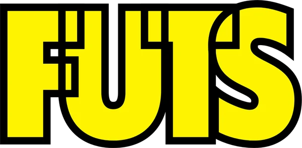
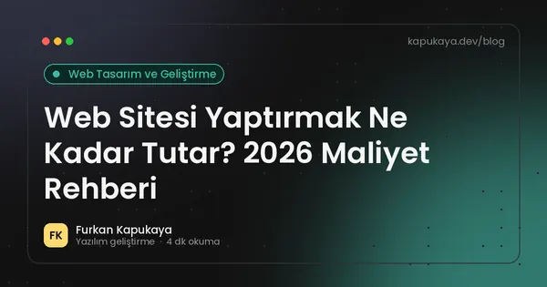
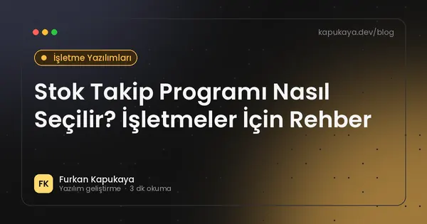

İşletmenizin işleyişine uygun yazılım çözümleri.
Masaüstü uygulamalarından web sitelerine, konsol araçlarından sistem entegrasyonlarına kadar iş süreçlerinizi hızlandıran, kullanımı kolay ve uzun ömürlü yazılımlar tasarlıyor ve geliştiriyorum.
İstanbul merkezli, Türkiye genelinde uzaktan hizmet.
Durum etiketlerine tıklayarak müşteriyi "Geldi" olarak işaretleyin; kasa kendiliğinden güncellenir.
Yeni evinize bir adım daha yakınsınız.
İstanbul genelinde güncel satılık ve kiralık ilanlar
7 ilan listeleniyor
Geliştirici: kapukaya.dev, 4 eklenti. Her eklentiyi burada küçük bir örnekle deneyebilirsiniz.
- VolumoraSekmedeki sesi yükseltir, ekolayzır ve ses iyileştirme ayarları sunar.Mağazada gör (yeni sekmede açılır)
- AssetifySayfadaki görselleri, videoları, renkleri ve yazı tiplerini bulup indirir.Mağazada gör (yeni sekmede açılır)
- Copy UnlockerKopyalama ve sağ tıklamanın engellendiği sayfalarda bu işlevleri açar.Mağazada gör (yeni sekmede açılır)
- FK Social HubX, Instagram, TikTok ve YouTube için analiz ve içerik araçları.Mağazada gör (yeni sekmede açılır)
Bu dosyaların yaptığı işi artık tek bir program yapıyor: stok, müşteri, randevu ve kasa aynı veritabanında.
Yükleniyor…
Açık pencereler
Geçmek için Tab, seçmek için Alt tuşunu bırakın veya tıklayınKapatılıyor
Yeniden başlatılıyor
Bilgisayar kapatıldı.
Kapatmadan önce aklınızdaki proje için bir teklif almaya ne dersiniz?
Simgelere tıklayarak örnek ekranları açın ve içlerinde gezinin. Masaüstüne sağ tıklayabilir, konsola komut yazabilirsiniz. Ekranlar temsilidir; her proje işletmenin kendi ihtiyacına göre tasarlanır.
Hizmet verilen işletmelerden bazıları

Hizmetler
Her proje, işletmenin ihtiyaçları ve mevcut iş akışı analiz edilerek planlanır.
Masaüstü uygulamaları
Randevu, stok, satış, servis, personel ve kasa takibini tek bir Windows uygulamasında toplayan çözümler. Kâğıt ve dağınık Excel dosyaları yerine tüm ekibin aynı güncel veriyle çalıştığı bir yapı.
Referans projelerKiraz Oto, Olivia Hair MansionKurumsal web siteleri
Firmanızı, ürünlerinizi ve iletişim kanallarınızı net biçimde sunan, tüm cihazlarda uyumlu çalışan ve arama motorlarına uygun şekilde hazırlanan web siteleri.
Referans projelerMetrekare Gayrimenkul, Prodent, Prosoll, ProsenseWeb tabanlı yönetim panelleri
Tarayıcı üzerinden erişilen, kullanıcı yetkilendirmeli yönetim panelleri. İş takibi, finans, personel ve raporlama ekranlarıyla ofiste ve sahada aynı veriye erişim.
Referans projelerFuts MedyaAPI ve sistem entegrasyonu
Ödeme altyapıları, barkod okuyucular, etiket yazıcılar ve üçüncü taraf servislerle entegrasyon. Sistemleriniz arasında veriyi güvenli ve otomatik olarak aktaran REST API çözümleri.
Kullanım alanıBirden fazla sistemin manuel olarak eşitlendiği süreçler.Konsol uygulamaları
C# ile geliştirilen, arka planda çalışan araçlar: zamanlanmış veri aktarımı, toplu dosya ve kayıt işlemleri, raporlama ve bildirim görevleri. Tekrarlayan manuel işlemler otomatik hale getirilir.
Kullanım alanıGünlük, saatlik veya gece çalışan tekrarlı işlemler.Tarayıcı eklentileri
Ekiplerin tarayıcıda her gün tekrarladığı işlemleri kısaltan Chrome eklentileri. Geliştirilen eklentiler Ürünler bölümünde yer almaktadır.
ÖrneklerÜrünler, Chrome Web Store
Referans projeler
Farklı sektörlerdeki işletmeler için geliştirilen projelerden bazıları.
Kiraz Oto
Lastik ve yol yardım işletmesi için stok, satış, servis ve müşteri kayıtlarını tek programda toplayan masaüstü uygulama.
Projeyi inceleyinFuts Medya
Medya ve tasarım ajansı için tanıtım sitesi ile finans ve personel takibi yapılan şirket içi yönetim paneli.
Projeyi inceleyinOlivia Hair Mansion
Kuaför salonu için randevu, müşteri, personel ve kasa takibini bir araya getiren salon yönetim programı.
Projeyi inceleyinMetrekare Gayrimenkul
Emlak ofisi için portföyü sergileyen, telefonda da rahat kullanılan kurumsal tanıtım sitesi.
Projeyi inceleyinProdent, Prosoll ve Prosense
Üç markadan oluşan ürün ailesi için ürün gruplarını, satış noktalarını ve iletişim bilgilerini bir arada sunan ortak kurumsal site.
Projeyi inceleyinİki dakikada ihtiyacınızı netleştirin
Küçük araçlarla kaybedilen zamanı hesaplayın, size uygun yazılım türünü bulun veya web sitenizin durumunu test edin. Sonuçları tek tıkla teklif formuna aktarabilirsiniz.
Elle yapılan, tekrar eden bir işi düşünün: Excel'e veri girmek, rapor hazırlamak, bilgileri bir sistemden diğerine taşımak.
0saat / yıl
- Haftalık0 saat
- İş günü karşılığı0 gün
- Yıllık tahmini maliyet₺0
Bu sürenin yalnızca yarısını otomatikleştirmek bile yılda 0 saat demek.
48 çalışma haftası ve 8 saatlik iş günü varsayılmıştır; sonuçlar yalnızca tahmindir.Süreç nasıl ilerliyor?
Talebinizin alınmasından teslim sonrası desteğe kadar tüm aşamalar planlı ve şeffaf şekilde yürütülür.
Adım 1 / 5
Ön görüşme
İşletmenizin mevcut iş akışı ve beklentileriniz telefon, görüntülü görüşme veya yüz yüze toplantı ile değerlendirilir.
- Mevcut iş akışının incelenmesi
- Beklentilerin ve önceliklerin konuşulması
- Telefon, görüntülü görüşme veya yüz yüze
Adım 2 / 5
Kapsam ve teklif
Yapılacak işler, teslim süresi ve bütçe yazılı olarak netleştirilir. Onayınızın ardından çalışmaya başlanır.
- Yapılacak işlerin listesi
- Teslim süresi
- Bütçe
- Yazılı onay
Adım 3 / 5
Geliştirme
Proje belirli aralıklarla çalışan sürümler halinde paylaşılır ve geri bildirimlerinize göre ilerler.
- Belirli aralıklarla çalışan sürümler
- Geri bildirimlerinize göre düzenleme
Adım 4 / 5
Teslim ve kurulum
Kurulum tamamlanır, sistemi kullanacak ekibe gerekli bilgilendirme yapılır.
- Kurulumun tamamlanması
- Kullanacak ekibin bilgilendirilmesi
Adım 5 / 5
Destek
Teslim sonrasında oluşabilecek sorunlar ve yeni ihtiyaçlar için teknik destek sağlanır.
- Sorunlara teknik destek
- Yeni ihtiyaçların değerlendirilmesi
Furkan Kapukaya
2021’den bu yana profesyonel olarak yazılım geliştirmekteyim. E-ticaret ve kurumsal yazılım ekiplerinde C# ve .NET teknolojileriyle edindiğim deneyimi, bugün işletmelere özel yazılım çözümleri geliştirmek için kullanıyorum.
Her projede önce işletmenin gerçek iş akışı analiz edilir; ardından günlük kullanımı kolaylaştıran, sürdürülebilir ve güvenilir çözümler tasarlanır.
- Deneyim
- 2021’den beri yazılım geliştirme
- Ana teknolojiler
- C#, .NET, ASP.NET Core, SQL Server
- Eğitim
- Bilgisayar Programcılığı, Yönetim Bilişim Sistemleri
Referanslar
Etkileyici teknolojik bilgisine rağmen Furkan’ın en önemli özelliği, programlama becerilerinden ziyade esnek zekâsı, kişisel disiplini ve güvenilirliğidir.
Sorun çözen ve işleri yoluna koyan biridir.
Daha ilk görüşmeden itibaren, ona verdiğiniz işi sürekli kontrol etmenize gerek olmadığını fark ediyorsunuz.
Birlikte çalıştığımız dönemde Furkan ile çalışmak, özellikle iş disiplini, olayları yorumlama becerisi, problem çözme yeteneği ve pratik zekâsıyla büyük bir keyifti. Bu projede yollarımız ayrılmış olsa da gelecekte aynı ekipte olmak isteyeceğim ve her anlamda referans olabileceğim bir arkadaştır.
Furkan ile birlikte çalıştığımız dönemlerde görevleri hızlı ve kaliteli bir şekilde tamamlaması, analitik zekâsının ve yeteneğinin en büyük göstergesidir. Her zaman birlikte çalışmak isteyeceğim biri.
Tüm referanslar için özgeçmiş sayfasını inceleyebilirsiniz.
Ürünler
Müşteri projelerinin yanı sıra geliştirilen Chrome tarayıcı eklentileri.
Volumora
Tarayıcı sekmesindeki sesi yükselten, ekolayzır ve ses iyileştirme ayarları sunan eklenti.
Gizlilik politikasıMağazada görAssetify
Bir web sayfasındaki görselleri, videoları, renkleri ve yazı tiplerini bulup indirmeyi kolaylaştırır.
Gizlilik politikasıMağazada görCopy Unlocker
Metin seçimi, kopyalama ve sağ tıklamanın engellendiği sayfalarda bu işlevleri yeniden açar.
Gizlilik politikasıMağazada görFK Social Hub
X, Instagram, TikTok ve YouTube için analiz, trend keşfi ve yapay zekâ destekli içerik araçları.
Gizlilik politikasıMağazada gör
Blog
Yazılım projeleri, otomasyon ve web teknolojileri üzerine yazılar.

Web Sitesi Yaptırmak Ne Kadar Tutar? 2026 Maliyet Rehberi
Web sitesi fiyatlarını belirleyen tasarım, sayfa sayısı, altyapı, içerik, hosting ve bakım kalemlerini 2026 koşullarıyla açıklayan rehber.
Yazıyı oku
SEO Nedir? 2026'da Arama Motoru Optimizasyonu Rehberi
SEO'nun ne olduğu, teknik SEO, içerik ve otorite ayakları, yapay zekâ destekli arama sonuçlarının etkisi ve işletmeler için uygulanabilir ilk adımlar.
Yazıyı oku
Stok Takip Programı Nasıl Seçilir? İşletmeler İçin Rehber
Stok takip programında olması gereken özellikler, barkod ve çoklu depo desteği, raporlama, hazır ve özel yazılım karşılaştırması ile seçim kriterleri.
Yazıyı oku
Sık sorulan sorular
Proje süreci ve hizmetler hakkında en çok merak edilen konular.
Hangi tür yazılım projeleri geliştiriliyor?
Windows masaüstü uygulamaları, kurumsal web siteleri, web tabanlı yönetim panelleri, C# konsol uygulamaları, API ve sistem entegrasyonları ile Chrome tarayıcı eklentileri geliştirilmektedir.
Hangi teknolojiler kullanılıyor?
Ağırlıklı olarak C#, .NET, ASP.NET Core, Entity Framework ve SQL Server; web tarafında HTML, CSS, JavaScript ve Bootstrap kullanılır. Teknoloji seçimi projenin ihtiyacına göre yapılır.
Proje süreci nasıl başlıyor?
İletişim formu veya e-posta ile talebinizi iletmenizin ardından bir ön görüşme planlanır. İhtiyaçlar netleştikten sonra kapsam, süre ve bütçe yazılı olarak paylaşılır.
Fiyatlandırma nasıl belirleniyor?
Her proje kapsamına, süresine ve teknik gereksinimlerine göre ayrı değerlendirilir. Ön görüşmenin ardından projeye özel bir teklif hazırlanır.
Uzaktan çalışma mümkün mü?
Evet. İstanbul merkezli olarak Türkiye genelindeki işletmelere uzaktan hizmet verilmektedir. Gerekli durumlarda yüz yüze görüşme de planlanabilir.
Teslim sonrasında destek sağlanıyor mu?
Evet. Teslim sonrasında oluşabilecek sorunlar ve yeni ihtiyaçlar için teknik destek sağlanır; destek kapsamı projeye göre belirlenir.
Projenizi değerlendirelim
Projenizle ilgili kısa bir bilgi paylaşmanız yeterlidir. Talebiniz incelenerek en kısa sürede dönüş yapılır. Henüz netleşmemiş fikirleriniz için de iletişime geçebilirsiniz.
- E-postainfo@kapukaya.dev
- LinkedInfurkankapukayaa
- Konumİstanbul, Türkiye